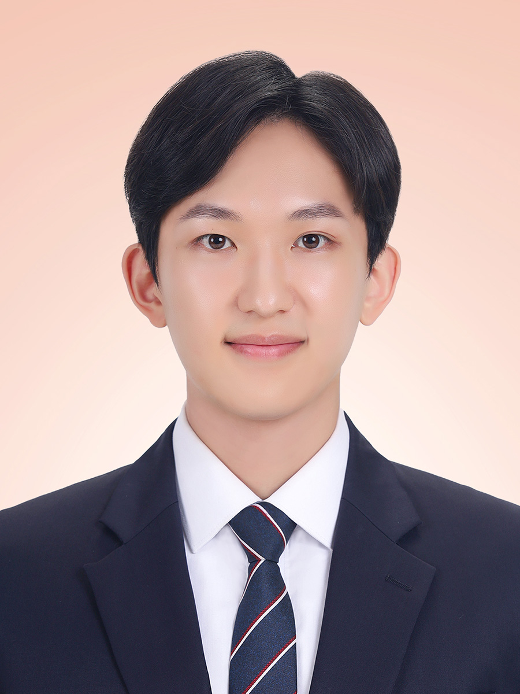

Yonghun Ryu
M.S. student at Korea University (from Sep 2025)
B.S. in Electrical and Electronic Engineering, Korea Univ (2024)
👋 About Me
Hello! I’m Yonghun Ryu, an M.S. student at Korea University, starting in September 2025.
I received my B.S. degree in Electrical and Electronic Engineering from Korea University in 2024.
I’m currently joining the ComSys Lab (Computer Systems Laboratory), where I aim to contribute to research in next-generation system architectures and hardware acceleration.
🔬 Current Research Interests
-
Processing-In-Memory (PIM):
Exploring memory-centric computing architectures to reduce data movement bottlenecks and improve system performance through near-data processing.
-
GPU Architecture & GPGPU Acceleration:
Currently working on porting the Vortex GPGPU architecture to an AMD Alveo FPGA board, focusing on system-level integration, architectural customization, and runtime performance optimization.
📘 Past Academic Experience
-
Digital Integrated Circuit Design:
Designed and optimized Verilog-based digital modules, focusing on area, timing, and power. Experience includes FIR filter synthesis, JPEG compression logic, and FPGA-based digital system projects.
-
System-on-Chip (SoC) Design and Verification:
Studied SoC integration flows, IP-based design, and simulation/verification techniques through coursework and practical training programs (e.g., IDEC).
📫 Contact
Feel free to reach out if you’re interested in similar topics or would like to connect!
Email: yonghun0626@korea.ac.kr